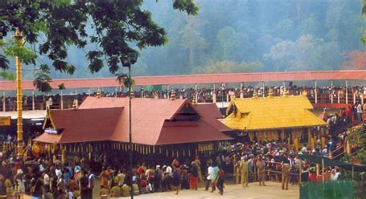
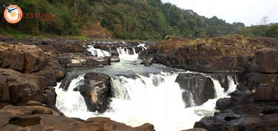

More than fifty per cent of the total area of this district is covered by forests. Pathanamthitta is one of the most important pilgrim centers in Kerala and there are many Temples and Churchs. Maramon, the place where the world famous Maramon convention is conducted, is in this district. Sabarimala,located at an altitude of 3790 feet, is one of the most famous pilgrim centers in India. The world famous Aranmula mirrors comes from this district. The elephant-training center at Konni is also another attraction of the district.
 